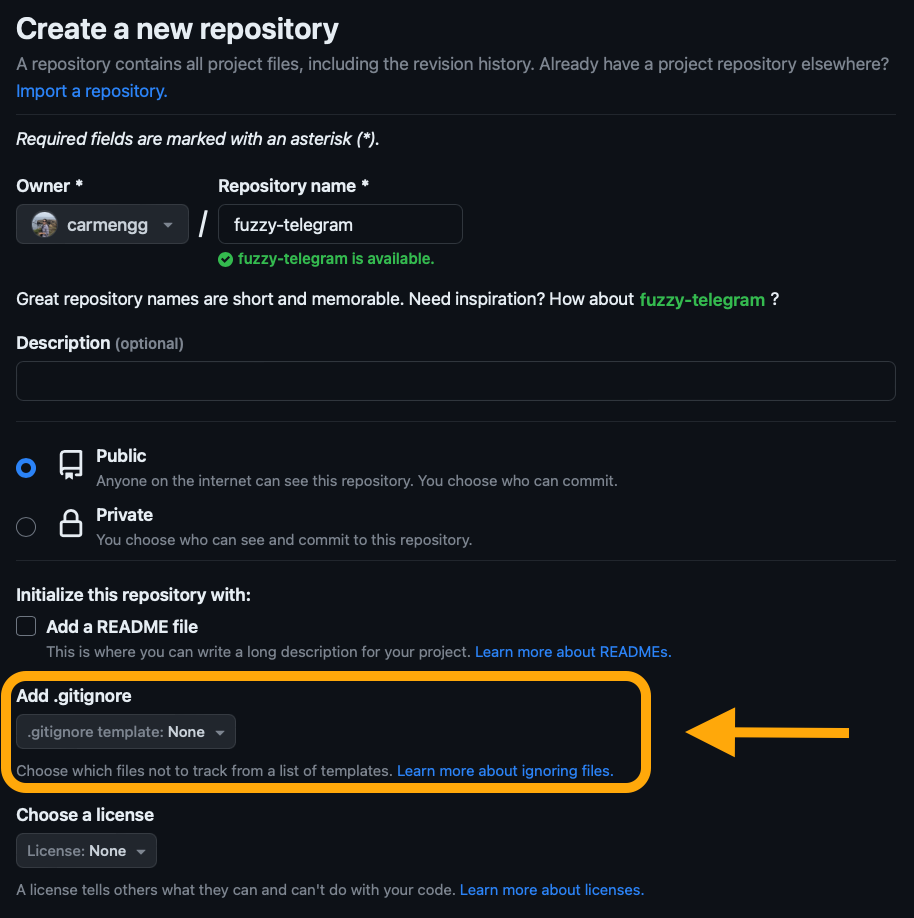
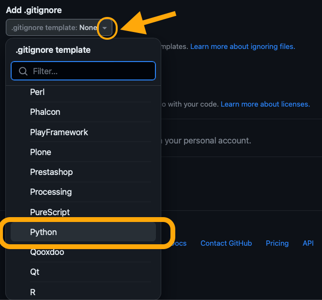

ls -aAppendix B — Gitignore & Git Untracking
This is a review on how to never track and untrack files in Git using the terminal and the .gitignore file.
B.1 Gitignore
The easiest way to have Git never track a file or directory within your Git directory is to add it to the .gitignore file before you ever start tracking it.
From the Git documenatation:
A gitignore file specifies intentionally untracked files that Git should ignore. Files already tracked by Git are not affected.
This means the files listed in the .gitignore will be ignored when making a commit. Git does not track changes on it and they do not appear in the index when we check the Git status.
B.2 Creating a .gitignore
B.2.1 When creating a GitHub repository
The easiest way to create a .gitignore is probably when creating a repository through GitHub. To do this:
- Go to the “Add .gitignore” section and…

- …select a template from the list. These templates are provided by GitHub to ignore unuseful files in different programming languages. For this course we select the Python .gitignore template.

- When you finish creating your new repository, the .gitignore file will be in it.
B.2.2 From the GitHub .gitignore templates
If you don’t have a .gitignore yet and want to add the one from the GitHub template you can:
Download the .gitignore GitHub template: https://github.com/github/gitignore.
Move it to your directory.
Update the name to
.gitignore.
B.2.3 From the command line
What if we we just want to create our own blank .gitignore? No problem, we can create one from our terminal:
Open the terminal.
Verify you don’t have a .gitignore by running:
ls -a
Adding -a to the ls (list) command will show all the files, including the hidden files that start with a period ., such as the .gitignore.
- Create a new .gitignore file for the directory:
touch .gitignoreIf there is no output, everything worked.
- Check your .gitgnore is there:
ls -aYou should see the .gitignore now listed in the files.
B.3 Editing .gitignore
B.3.1 Add a file
Suppose you have an untracked file called example.txt that you want to add to the .gitignore. Remember, untracked means Git hasn’t began tracking changes on this file. If you run git status, example.txt would appear in the index under Untracked files.
If you are using JupyterLab, you can edit the .gitignore from the terminal. Follow these steps to add example.txt to it:
Open the terminal.
Open the .gitignore file in the nano command line-based text editor by running:
nano .gitignoreOnce in the editor, add a new line with the name of the file:
example.txt.To exit nano:
Ctrl+X,- Press
Yto save the changes - Press
Enter
When you run
git statusagain,example.txtwill not be listed under the untracked files.
B.3.2 Add a directory
Suppose you want to add all the contents of a directory named data to your gitignore. If none of the files in the data directory have been tracked by Git, then:
Open the terminal.
Open the .gitignore file in the nano command line-based text editor by running:
nano .gitignoreOnce in the editor, add a new line with the name of the directory:
data/.To exit nano:
Ctrl+X,- Press
Yto save the changes - Press
Enter
When you run
git statusagain,data/will not be listed in the untracked files.
B.4 Untracking
Once a file has been added to a commit, Git starts tracking it. If we add the file’s name to the .gitignore after it has been commited, Git will keep tracking changes in it. To stop tracking a tracked file example.txt:
Open the terminal.
Run
git rm --cached example.txt. Thegit rm --cachedcommand will remove the file from the Git tracking while leaving the file untouched on disk. If you rungit status, it will now appear in the index as deleted. That’s ok! Your file is still there, it’s just “deleted” from Git.If it’s not already there, add
example.txtto .gitignore so Git ignores it.